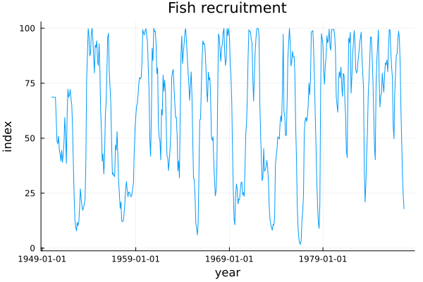
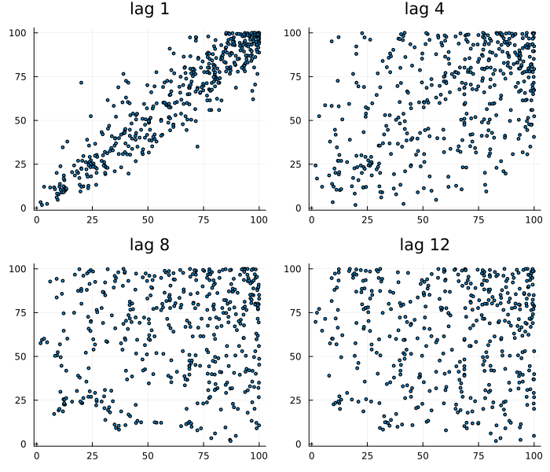
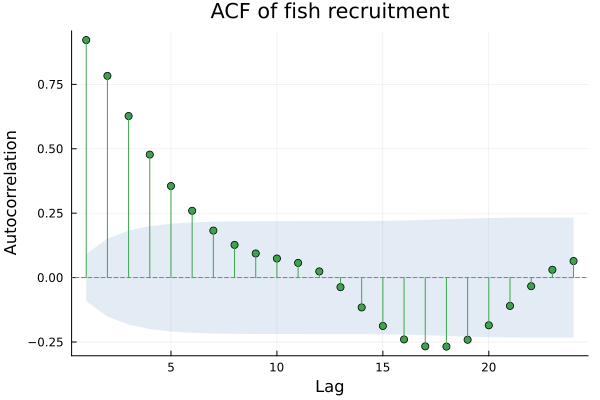
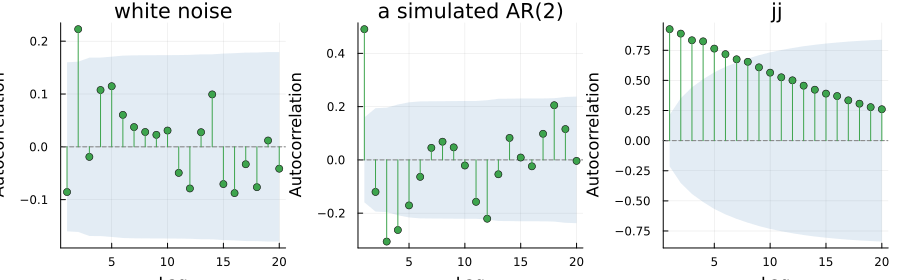
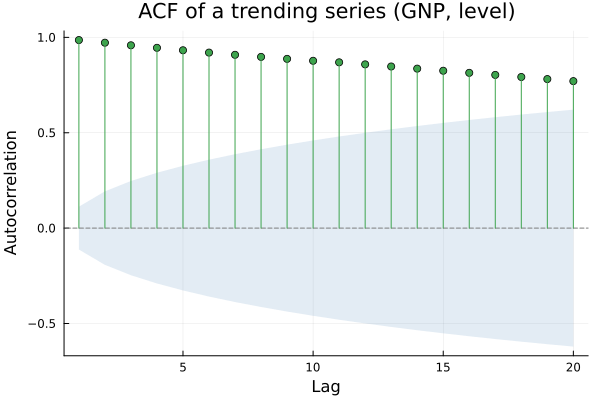
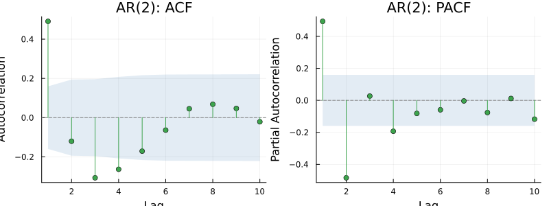
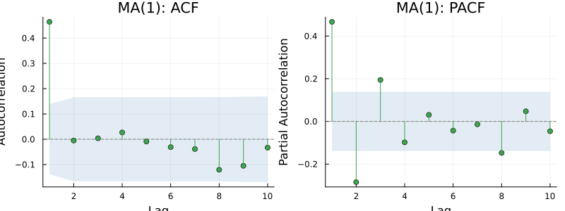
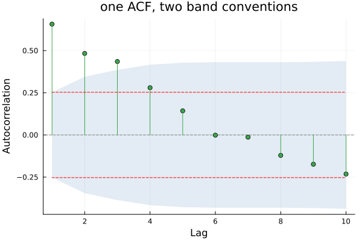

Autocorrelation
using TSAnalytics, Plots
rec = dataset("rec")
plot(rec.date, rec.value; title="Fish recruitment", xlabel="year", ylabel="index", legend=false)
Four hundred and fifty-three monthly observations. The series oscillates with a period somewhere close to a year, but not regularly enough to be a clean, reliable seasonal pattern — some cycles run longer than others, some peaks are sharper. Chapter 4 smoothed a series much like this one on the working assumption that neighbouring observations carry information about each other. That assumption was never actually checked. This chapter checks it.
Correlation with a shifted copy
The obvious attempt: take the series, shift a copy of it by some number of steps, and correlate the two.
p1 = scatter(rec.value[1:end-1], rec.value[2:end]; title="lag 1", legend=false, markersize=2)
p2 = scatter(rec.value[1:end-4], rec.value[5:end]; title="lag 4", legend=false, markersize=2)
p3 = scatter(rec.value[1:end-8], rec.value[9:end]; title="lag 8", legend=false, markersize=2)
p4 = scatter(rec.value[1:end-12], rec.value[13:end]; title="lag 12", legend=false, markersize=2)
plot(p1, p2, p3, p4; layout=(2,2), size=(700,600))
At lag 1 the points sit close to a line — this month's recruitment says a great deal about next month's. At lag 4 the cloud has opened up and rounded out. At lag 12 there is visible structure again, because the series carries an annual rhythm. Autocorrelation is nothing more exotic than the ordinary correlation coefficient of each of these scatterplots in turn, collected into one sequence indexed by lag. Starting from the pictures rather than the formula matters here — a reader who has actually seen these four scatterplots will never again think of the autocorrelation function as an abstraction with no picture behind it.
r = acf(rec.value, 1:24)
plot(r; title="ACF of fish recruitment")
Each bar in this picture is one of the scatterplots above, reduced to a single number. The decay away from lag 1, the trough somewhere past lag 6, and the bump back up near lag 12 are all visible in one glance, which is exactly why nobody actually draws two dozen scatterplots in practice once they have this.
Reading the shapes
using Random
Random.seed!(4)
n = 200
y_ar2 = zeros(n)
for t in 3:n
y_ar2[t] = 0.6*y_ar2[t-1] - 0.3*y_ar2[t-2] + randn()
end
y_ar2 = y_ar2[50:end]
white = randn(150)
jj = dataset("jj")
p1 = plot(acf(white, 1:20); title="white noise")
p2 = plot(acf(y_ar2, 1:20); title="a simulated AR(2)")
p3 = plot(acf(jj.value, 1:20); title="jj")
plot(p1, p2, p3; layout=(1,3), size=(900,280))
White noise gives bars that are all small and stay inside the band — the picture of nothing happening, and worth knowing on sight because it is what a well-fitted model's residuals ought to look like. The AR series decays, roughly geometrically, in a way white noise never does. jj's autocorrelation has real spikes at 4, 8 and 12, because quarterly data with a seasonal pattern repeats every four observations and the autocorrelation function has no way to hide that.
gnp = dataset("GNP")
plot(acf(gnp.value, 1:20); title="ACF of a trending series (GNP, level)")
The bars here decay very slowly and stay outside the band for a long run of lags. This is the single most common thing a beginner's ACF plot is trying to say, and it is the signature of a series that has not been differenced yet. Chapter 3 supplied the fix; this is the shape that announces the need for it.
The partial autocorrelation
Motivate this properly before naming it. If y_t correlates with y_{t-1}, and y_{t-1} in turn correlates with y_{t-2}, then y_t will show some correlation with y_{t-2} even if there is no direct link between them at all — the relationship is entirely mediated by the observation in between. The ordinary ACF has no way to tell a direct relationship from one borrowed at second hand. The partial autocorrelation function is built specifically to separate the two.
p1 = plot(acf(y_ar2, 1:10); title="AR(2): ACF")
p2 = plot(pacf(y_ar2, 1:10); title="AR(2): PACF")
plot(p1, p2; layout=(1,2), size=(800,300))
The ACF decays gradually, giving no obvious place to stop. The PACF cuts off sharply after lag 2, which is the actual order of the process that generated this series — read directly off the picture, no fitting required.
Random.seed!(6)
e = randn(n)
y_ma1 = e[2:end] .+ 0.7 .* e[1:end-1]
p1 = plot(acf(y_ma1, 1:10); title="MA(1): ACF")
p2 = plot(pacf(y_ma1, 1:10); title="MA(1): PACF")
plot(p1, p2; layout=(1,2), size=(800,300))
The exact mirror image: the ACF cuts off after lag 1 and the PACF decays instead. This pair of pictures — a sharp cutoff in one function paired with gradual decay in the other, in either order — is the classical Box-Jenkins identification method, and Chapter 17 puts it to real work. A reader who has internalised these two shapes can identify a simple AR or MA process by eye. It is worth being honest that real data rarely cooperates this cleanly — both series above are simulated specifically to show the textbook shape, and Chapter 21's automatic order selection exists partly because real ACF/PACF pairs are so often much messier than this.
Whose confidence band?
Random.seed!(17)
n2 = 60
phi = 0.6
y2 = zeros(n2)
y2[1] = randn() / sqrt(1 - phi^2)
for t in 2:n2
y2[t] = phi*y2[t-1] + randn()
end
r_bart = acf(y2, 1:10; bartlett=true)
r_const = acf(y2, 1:10; bartlett=false)
plot(r_bart; title="one ACF, two band conventions")
plot!(r_const.upper; label="constant band", linestyle=:dash, color=:red)
plot!(r_const.lower; label="", linestyle=:dash, color=:red)
for lag in (1, 2, 4, 8)
println("lag $lag: acf=$(round(r_bart.values[lag], digits=4)) ",
"constant band=±$(round(r_const.upper[lag], digits=4)) ",
"Bartlett band=±$(round(r_bart.upper[lag], digits=4))")
endlag 1: acf=0.6568 constant band=±0.253 Bartlett band=±0.253
lag 2: acf=0.4831 constant band=±0.253 Bartlett band=±0.3454
lag 4: acf=0.28 constant band=±0.253 Bartlett band=±0.4164
lag 8: acf=-0.121 constant band=±0.253 Bartlett band=±0.4314The two bands are answering different questions, not just drawing different widths. The constant band tests every single lag against the hypothesis that the whole series is white noise. Bartlett's band tests lag k against a more specific hypothesis — that the series is a moving average of order k-1, so that everything up to k-1 is real structure and lag k is the first spurious one. The second is usually the question actually being asked when an ACF is read for model identification, which is why it is the more commonly recommended default.
On the series above, both bands agree at lag 1 — they reduce to the same short-lag formula there — and separate from lag 2 onward. At lag 4 the autocorrelation is 0.28. The constant band, ±0.253, calls it significant. The Bartlett band, widened by the real structure already found at lags 1–3, comes out at ±0.416, and the same number at the same lag is not significant under it. Same data, same lag, opposite verdicts. The two formulas themselves were checked directly this session against real R's constant-band default and real statsmodels' Bartlett-band default on a separate series generated for exactly that purpose, confirming both formulas above are transcribed correctly rather than merely plausible; this package's own acf, on the series shown here, reproduces both bands exactly — bartlett=true (its default) matching statsmodels' convention, bartlett=false matching R's. A reader arriving expecting R's narrower, constant band should know this package defaults the other way, and pass bartlett=false explicitly to match it.
p_yw = pacf(y_ar2, 1:5; method=:yw)
p_ywm = pacf(y_ar2, 1:5; method=:ywm)
println("pacf, :yw = ", round.(p_yw.values, digits=4))
println("pacf, :ywm = ", round.(p_ywm.values, digits=4))pacf, :yw = [0.494, -0.4841, 0.027, -0.1931, -0.0816]
pacf, :ywm = [0.4907, -0.4756, 0.0236, -0.1849, -0.0799]The partial autocorrelation function carries a smaller version of the same story. :yw, this package's default, matches statsmodels' own default denominator (n − k); :ywm matches R's pacf() exactly (n) — R has no adjusted-denominator option at all, so comparing "R's PACF against Python's" at each package's own defaults will show a small but entirely genuine discrepancy, visible above even on a single simulated series, and not a bug in either.
A single ACFResult type serves both acf and pacf, distinguished only by a kind field, and one plot recipe branches on that field to choose the right axis label. There was no need for two nearly-identical result types just because the two functions compute conceptually different things — the shape of the answer (lags, values, a confidence band) is identical either way.
Indian monthly industrial data carries a real annual rhythm, so its ACF does show the expected spike near lag 12 — usually a weaker and less regular one than a comparable Western series shows at the same lag. Part of the reason is that the festival calendar itself moves: the Diwali-linked production surge lands in October some years and November in others, so the "annual" pattern is not repeating at a genuinely fixed lag every time. The ACF only knows about fixed lags, and it blurs anything that is not one — a real limitation of the tool, not a fault in the data, and one reason the calendar regressors of Chapter 36 exist at all.
Where this leaves you
You can now measure how a series relates to its own past, at every lag simultaneously, and read a plausible model order directly off the picture when the data is cooperative enough to allow it. What you still cannot do is find a cycle whose period you did not already suspect — the ACF of a series with an eleven-year cycle will tell you that something repeats, never that the number is eleven. For that, the question has to change from "which lag" to "which frequency."